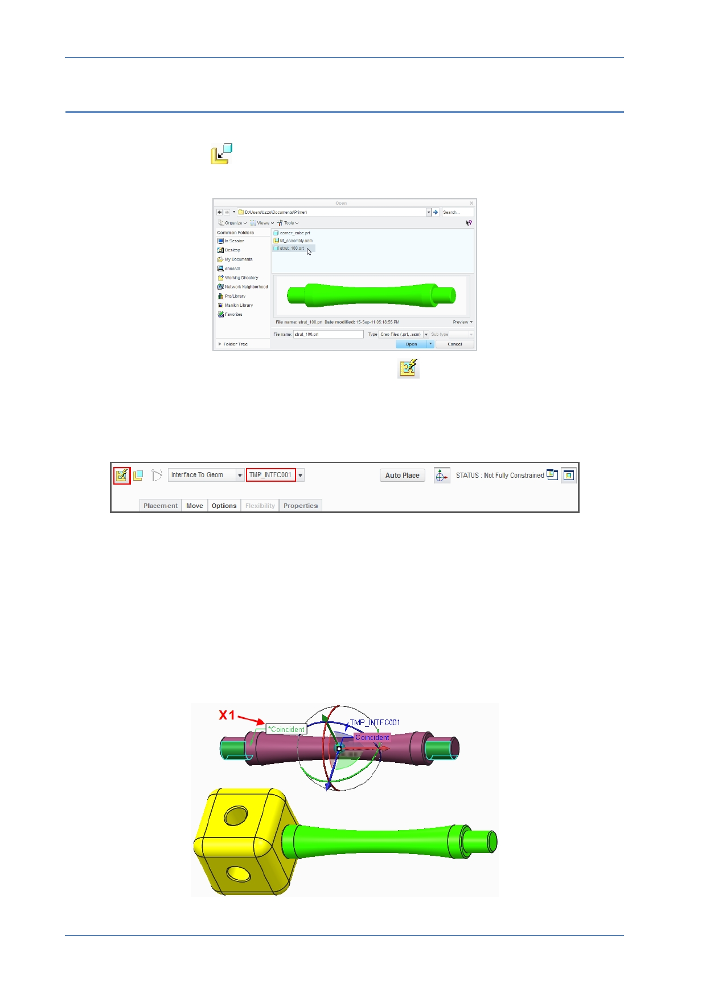

PTC Academic Program
Step 5: Assembling more struts
1. Selecting the component to assemble:
Click Assemble
from the Component group.
In the Open dialog box, double-click the STRUT_100.PRT model.
Notice in the dashboard that Place Using Interface
has been enabled and a
temporary interface named TMP_INTFC001 is selected. This means that Creo
Parametric remembers the references that were selected the first time the strut was
inserted into the assembly. This time you will only have to select the assembly
geometry. You can see that the cylindrical surface of the strut is already selected.
2. Locating the strut temporarily and determining which end of the strut references the
second coincident constraint:
Move your mouse to locate the strut above the assembly and click in the graphics
area to place it temporarily.
Move your cursor over the *Coincident constraint tag X1 , the surface that is
referenced by this constraint will highlight on the strut model.
Also notice that the *Coincident constraint tag is pointing to one end of the strut.
Remember which end of the strut is highlighted, you will need to know this in the task
below.
© 2012 PTC
Creo Parametric 2.0 Primer
Page 77